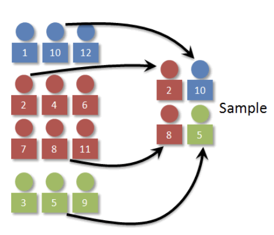
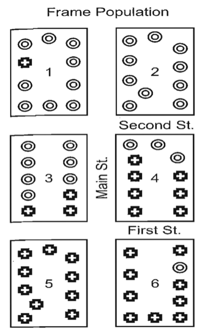
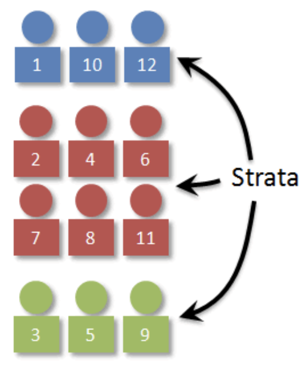
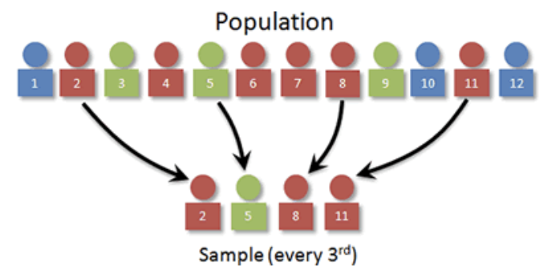

조사방법론. 2. 표본설계
chapter 1. 표본설계 개요
표본 설계는 설문조사가 모집단의 특성을 신뢰성 있고 효율적으로 반영하며 조사 목적을 충실히 달성하기 위해 필요한 핵심 과정이다.
설문조사의 주요 목적은 모집단 전체의 특성을 이해하거나 추론하는 것이다. 그러나 모집단의 모든 구성원을 조사하는 것은 현실적으로 어렵기 때문에, 이를 대체할 수 있는 대표 표본을 구성하는 과정이 필수적이다. 표본 설계를 통해 모집단의 다양한 특성을 균형 있게 반영할 수 있으며, 이는 신뢰할 수 있는 통계 추정의 기반이 된다.
표본이 특정 집단에 치우치거나 무작위성이 확보되지 않는다면 조사 결과는 왜곡될 수 있다. 표본 설계는 모집단의 모든 하위 그룹이 적절히 포함되도록 구성하여 편향을 방지하고, 통계적 균형을 유지하는 데 기여한다.
또한, 표본 설계는 조사 자원을 효율적으로 사용하는 데 중요한 역할을 한다. 제한된 시간과 예산 안에서 필요한 정확도를 확보하기 위해, 층화 표본이나 군집 표본 등 다양한 표본 추출 방법이 활용된다. 이는 조사 비용을 절감하면서도 충분한 정보를 얻을 수 있도록 돕는다.
표본이 체계적으로 설계되면 통계적 편향과 오차가 줄어들고, 결과적으로 조사 결과의 신뢰성이 향상된다. 이는 조사 데이터를 기반으로 한 정책 수립이나 연구 분석의 질을 높이는 데 직접적인 영향을 미친다.
마지막으로, 설문조사는 특정 하위 집단에 대한 통찰을 요구하는 경우가 많다. 표본 설계를 통해 특정 집단을 적절히 포함하거나 과대표함으로써, 해당 집단에 대한 정밀한 분석이 가능해진다. 이를 통해 보다 세분화된 해석과 의사결정이 이루어질 수 있다.
1. 용어
모집단 population
조사를 할 때 정보를 얻고자 하는 관심 집단, 즉 관심 대상이 되는 모든 사람들의 모임을 모집단이라고 한다.
목표 모집단은 조사 대상 전체를 의미하며, 조사 시점 기준의 유권자가 이에 해당한다.
조사 모집단은 실제로 조사가 가능한 모집단으로, 예를 들어 전화번호부 CD에 등재된 유권자가 이에 해당한다.
모수는 모집단의 관심 특성을 의미하며, 예를 들어 A 후보에 대한 지지율이 이에 해당한다.
표본 sample
모집단 중 조사를 위하여 추출한 일부를 표본이라고 한다. 추정량은 모수를 추정하기 위하여 표본으로부터 계산된 통계량이며, 이를 통계량(statistic)이라고도 한다. 예를 들어, 표본 1,000명 중 A 후보를 지지하는 사람이 560명이라면, A 후보의 지지율에 대한 추정량은 56%이다.
표본 프레임 sample frame
표본을 추출하기 위해 모집단 대상을 식별하고, 컨택(contact)에 필요한 정보를 포함한 목록을 말한다. 일반적으로 식별 아이디, 이름, 주소, 연락처 등으로 구성된다. 예를 들어 전화번호 CD를 활용한 조사에서는 해당 가구의 가구원 정보를 알 수 없기 때문에, 조사원이 “최근 생일이 지난 유권자”를 선정하거나, 현장에서 할당 인원을 조정하며 가구원 중 한 명을 조사 대상으로 선정한다. 표본프레임의 3가지 요건은 다음과 같다.
- 포괄성: 표본프레임은 조사 가능한 대상을 모두 포함하고 있어야 한다.
- 추출 확률의 동일성: 모집단의 각 구성원이 표본으로 추출될 확률이 동일해야 한다.
- 효율성: 사전에 조사되기를 바라는 사람들로만 표본프레임을 구성하는 것은 불가능하지만, 가능한 한 조사 목적에 부합하는 대상이 추출되도록 효율성을 고려한다.
표본추출: 표본추출은 조사 대상인 표본을 모집단으로부터 확률적으로 선택하는 과정이며, 조사 목적을 최대한 달성할 수 있도록 설계되어야 한다.
표본 크기: 표본 크기는 조사의 신뢰수준, 표본추출 방법, 허용오차(예: 변동계수) 등을 고려하여 결정한다.
조사단위
표본추출단위: 표본을 추출하는 기본 단위. 예를 들어 전화여론조사의 경우 ’가구’가 해당된다.
조사단위: 실제로 응답하는 사람. 대부분의 경우 표본추출단위와 조사단위는 일치하지만, 다른 경우도 존재한다. (상이한 경우) 전화여론조사에서 가구를 추출한 뒤, 그 안의 가구원 중 한 명이 응답하는 경우 (동일한 경우) 인터넷 쇼핑몰 이용 고객 실태조사에서 고객 자체가 추출단위이자 조사단위인 경우
2. 표본과 추정
모든 설문조사 표본이 확률적 방법으로 선택되는 것은 아니다. 많은 설문조사는 즉흥적으로 표본을 구성하거나, 조사 목적에 부합하도록 표본을 선택한다. 예를 들어, 쇼핑몰에 방문하는 사람들에게 설문 응답을 요청하고, 일정 수의 인터뷰가 완료될 때까지 조사를 계속 진행하는 경우가 있다. 이러한 즉흥적 또는 편의 표본추출 방법에는 공통된 약점이 존재하는데, 바로 모집단의 특성을 설명하기 위한 이론적 기반이 부족하다는 점이다. 이에 반해, 확률 표본추출은 단일 표본으로부터 모집단에 대해 통계적으로 유의미한 진술을 할 수 있는 기반을 제공하며, 일정한 신뢰 수준에서 추론이 가능하다는 장점이 있다.
외식비용 가구 설문조사의 프레임 모집단은 전화 서비스를 이용하는 모든 가구의 성인을 포함한다. 외식비의 전체 분포를 관찰하거나 완벽히 알 수는 없다. 설문조사는 이러한 분포를 알아내기 위해 수행된다. 모집단 개별 개체는 \(Y\)로 표시하고 모집단 평균은 \(\overline{Y}\), 모집단 분산 \(S^{2}\)으로 표현하고 설문조사의 주목적은 \(\overline{Y}\)를 추정하는 것이다.
각 설문조사는 여러 가지 발생 가능한 확률 표본 설계 중 하나의 실현으로 간주될 수 있다. 표본 조사 결과는 소문자를 사용하여 표현한다. 표본 관측값 \(y\) 값은 모집단 분포에 대한 평균과 분산을 가지고 있다. 표본평균은 \(\overline{y}\)로 불리며 이를 이용하여 \(\overline{Y}\)를 추정한다. \(y_{i}\) 관측값의 표본분산은 \(s^{2}\)으로 표시된다.
표본평균의 표집 분포 분산을 추정하기 위해 하나의 표본 실현에서 계산을 사용하여 \(V(\overline{y})\)를 추정한다. 표본평균의 표집 분포 분산의 또 다른 용어는 ”표본평균의 표본분산”이며 그 제곱근은 ”평균의 표준오차”라고 한다.
주어진 표본 조사(하나의 실현)에서 프레임 모집단 평균을 추정하고자 할 때, 표준오차를 사용하여 주어진 추정치에 대한 신뢰 구간을 설정한다. ”신뢰구간”은 모든 표본 실현에서 계산된 평균이 전체 프레임 모집단 평균으로부터 일정한 거리 내에 있을 신뢰 수준을 설명한다(포괄성, 비응답 및 기타 설문 조사 오류를 무시한 경우).
예를 들어, 소비자 조사에서 표본 외식비 평균을 \(\overline{y} = 42\)(천원)로 추정했다고 가정하자. 이 추정치의 표준오차를 2(천원)으로 추정 했다면, 95% 신뢰구간은 (42 - 2*2, 42 + 2*2) = (38, 46)가 된다.
표본통계의 표준오차는 동일한 설계에서 가능한 표본 실현들 간의 통계적 분포 또는 변동성을 측정하는 지표이다. 표준오차는 \(se(\overline{y}) = \sqrt{v(\overline{y})}\) 이며, 표본분산의 제곱근으로 계산된다.
| 구분 | 모집단 분포 | 표본 분포 | 표본평균 분포 |
|---|---|---|---|
| 현황 | 실현된 분포 | 모름 | 모름 |
| 크기 | \[i = 1,2,...,n\] | \[i = 1,2,...,N\] | \[s = 1,2,...,S\] |
| 개별 원소 | \[y_{i}\] | \[Y_{i}\] | \[{\overline{y}}_{s}\] |
| 평균 | \[\overline{y}\] | \[\overline{Y}\] | \[E({\overline{y}}_{s})\] |
| 분포 분산 | \[s^{2}\] | \[S^{2}\] | \[V(\overline{y})\] |
| 표준오차 | \[s\] | \[S\] | \[se(\overline{y})\] |
샘플링으로 인한 오류의 정도는 설계의 네 가지 기본 원칙에 의해 결정된다.
선택된 표본의 크기.
다른 모집단 요소가 표본에 선택될 가능성.
개별 요소가 독립적으로 또는 그룹(요소 또는 클러스터 샘플로 불리는) 내에서 선택되었는지 여부
표본이 샘플 내 주요 하위 모집단(층화)의 대표성을 제어하도록 설계되었는지 여부
3. 표본설계 절차
(1) 조사 목표 모집단 정의
조사의 출발점은 명확한 조사 목표를 설정하는 것이다. 이는 어떤 주제에 대해 누구를 대상으로 정보를 수집할 것인지를 규정하는 단계이다. 예를 들어, 고객 만족도를 평가하거나 특정 지역의 유권자 여론을 파악하고자 할 때, 각각의 조사 목적에 따라 관심 대상이 되는 모집단이 달라진다. 따라서 조사 목표에 부합하는 모집단을 명확히 정의하는 것이 설계 과정의 핵심이다.
(2). 모집단 정의 및 분석
조사 목표가 설정되면, 그에 따라 모집단의 범위를 명확히 정의해야 한다. 모집단이란 조사 대상이 되는 전체 집단으로, 예를 들어 특정 연령대의 고객이나 특정 지역의 거주자 등이 이에 해당한다. 모집단을 정의한 후에는 그 특성을 구체적으로 파악하는 작업이 필요하다. 모집단의 크기, 인구 구성, 지리적 분포와 같은 정보는 표본 설계의 기초가 되며, 이러한 분석을 통해 조사 대상의 대표성을 확보할 수 있다. 모집단에 대한 충분한 분석은 조사 과정 전반의 신뢰성을 높이며, 궁극적으로 정확하고 의미 있는 조사 결과를 도출하는 데 필수적인 단계이다.
(3). 표본 프레임 정의
표본을 추출하기 위해서는 먼저 모집단을 대표할 수 있는 표본 프레임을 정의해야 한다. 표본 프레임은 모집단의 구성원을 식별하고 접근할 수 있도록 구성된 명단이나 데이터베이스로, 예를 들어 고객 리스트, 유권자 명부, 전화번호 디렉터리 등이 이에 해당한다.
표본 프레임이 조사 목적에 부합하려면 그 정확성과 적절성을 면밀히 평가해야 한다. 프레임이 모집단 전체를 충분히 포괄하고 있는지, 동일한 대상이 중복 포함되어 있지는 않은지, 정보가 최신 상태로 유지되고 있는지 등을 점검하는 과정이 필요하다. 이러한 검토를 통해 불포함 오류나 중복 오류와 같은 표본 추출상의 문제를 최소화할 수 있다.
(4). 표본 설계 유형 선택
표본 설계는 조사 목표와 모집단의 특성에 따라 가장 적합한 추출 방법을 선택하는 과정이다. 이는 조사 결과의 신뢰성과 대표성을 확보하기 위한 핵심 단계로, 단순 무작위추출, 층화추출, 집락추출, 다단계추출 등 다양한 방법 중에서 조사 상황에 맞는 방식을 선택하게 된다. 적절한 표본 설계 유형을 선택하기 위해서는 모집단의 이질성 여부, 표본 프레임의 구조, 예산 및 시간 제약 등 여러 요소를 종합적으로 고려해야 한다.
(5). 표본 크기 결정
표본의 크기는 조사 결과의 정밀도와 신뢰도를 확보하는 데 직접적인 영향을 미치므로 신중하게 결정되어야 한다. 표본크기는 조사 목적, 허용 오차, 신뢰 수준, 모집단의 변동성, 그리고 예산 및 시간 제약 등을 종합적으로 고려하여 산정한다.
(6). 표본 추출
표본 추출은 사전에 설계된 표본 설계 유형에 따라 모집단에서 실제 표본을 선택하는 과정이다. 이 과정에서는 주관적 판단이 개입되지 않도록 무작위성을 철저히 확보해야 하며, 이는 추후 통계적 추론의 타당성을 담보하는 핵심 요건이다.
(7). 조사 및 데이터 수집
표본으로 선정된 대상에게 설문조사, 전화 인터뷰 등 다양한 방법을 통해 자료를 수집한다. 높은 응답률을 확보하기 위해 조사 전 사전 안내를 실시하고, 비응답자에 대해서는 추후 연락을 계획하는 등 응답 유도를 위한 전략이 병행된다.
(8). 자료 분석 및 결과 검토
수수집된 데이터를 분석하여 모집단의 특성을 추정한다. 분석 과정에서는 표본 설계에 따른 가중치를 적용하여 편향을 보정하고, 설계 효과(design effect)를 산출함으로써 표본 설계가 추정 결과에 미친 영향을 평가한다.
(9). 결과 보고
분석 결과는 조사 목적에 맞게 해석하여 보고되며, 조사 결과와 함께 사용된 표본 설계 방법, 표본 추출 방식, 표본 크기, 조사 한계점 등을 함께 제시해야 한다. 이를 통해 결과의 신뢰성, 정밀도, 해석 가능성을 독자가 판단할 수 있도록 한다.
chapter 2. 표본설계 방법
1. 단순임의추출방법 SRS Simple Random Sampling
(1) 정의 및 절차

단순임의 표본추출은 모집단에 포함된 모든 요소가 동일한 확률로 선택될 수 있도록 하는 표본 추출 방법이다. 즉, 크기 n의 모든 가능한 표본이 동일한 확률로 선택될 수 있도록 설계된다. 이 방법은 대표성과 무작위성을 보장하는 가장 기본적인 확률 표본 추출 방식으로, 표본 추출의 이론적 기준점이 된다.
단순임의 표본추출의 절차는 다음과 같다.
- 표본 프레임에 포함된 N개의 모든 원소에 일련번호를 부여한다.
- 난수 생성기를 활용하여 중복되지 않는 n개의 난수를 생성한다.
- 해당 난수에 해당하는 원소를 표본으로 선택한다.
이 과정은 모집단의 각 구성원이 표본에 포함될 동등한 기회를 가지도록 하며, 편향 없는 표본 구성을 가능하게 한다.
(2) 추정
단순 무작위 표본에서 평균 및 표본분산 계산
\(\overline{y} = \frac{1}{n}\overset{n}{\sum_{j = 1}}y_{i}\), \(v(\overline{y}) = \frac{(1 - f)}{n}s^{2}\), 여기서 \(f = n/N\) 표본 비율, \(s^{2}\)은 표본분산이다. \((1 - f)\)은 유한모집단보정계수(Finite Population Correction, FPC)이라 하고 \(N\)이 충분히 크면 1에 근사하여 \(v(\overline{y}) \approx \frac{s^{2}}{n}\) 이다.
\(v(\overline{y})\)는 표본평균의 샘플링 분산에 대한 표본 기반 추정치에 불과하다는 점을 주목할 필요가 있다. 여기에는 실제 모집단 값 \(V(\overline{y})\)이 존재하며 \(v(\overline{y})\)는 \(V(\overline{y})\)의 불편 추정치로 간주된다. 여론조사와 같이 응답자의 선호 비율을 묻는 경우 표본평균(표본비율)의 표본분산은 다음과 같다. \(v(p) = \frac{(1 - f)}{n - 1}p(1 - p)\). 표본분산 \(v(p)\)는 \(fpc\)(유한모집단보정계수), 표본크기 \(n\), 모집단 비율 \(p\) 값 자체에만 의존하므로 \(y_{i}\) 값을 알 필요 없이 계산 가능하다.
표본크기 결정 시 모평균 추정의 경우 모집단 분산 \(S^{2}\)에 대한 정보가 있어야 하지만 모비율 추정 시에는 보수적으로 \(p = 0.5\)을 사용하여 결정한다.
모집단 평균 95% 신뢰구간
\(\overline{y} + z_{0.975}se(\overline{y})\), 여기서 \(se(\overline{y}) = \frac{s}{\sqrt{n}}\)
모비율 평균 95% 신뢰구간
\(\widehat{p} + z_{0.975}se(\overline{y})\), 여기서 \(se(\widehat{p}) = \frac{p(1 - p)}{\sqrt{n}}\)
표본크기 허용오차 margin of error 표본오차: \(e\)
【표본크기 : 유한 모집단】
모평균 추정: \(n = \frac{N \cdot z^{2} \cdot S^{2}}{(N - 1) \cdot e^{2} + z^{2} \cdot S^{2}}\)
모비율 추정: \(n = \frac{N \cdot z^{2} \cdot p \cdot (1 - p)}{(N - 1) \cdot e^{2} + z^{2} \cdot p \cdot (1 - p)}\)
【표본크기 : 무한 모집단】
모평균 추정: \(n = \frac{z^{2} \cdot S^{2}}{e^{2}}\)
모비율 추정: \(n_{0} = \frac{z^{2} \cdot p \cdot (1 - p)}{e^{2}}\) (유한 \(n = \frac{n_{0}}{1 + \frac{n_{0} - 1}{N}}\))
2. 군집추출방법 cluster sampling

단순임의표본추출과 군집표본추출의 비교
단순임의표본추출은 모집단의 모든 구성 요소 중에서 각각이 동일한 확률로 선택될 수 있도록 표본을 추출하는 방법이다. 이 방식은 통계적으로 가장 이상적인 방법 중 하나지만, 실제 조사에서는 표본 프레임의 구성과 개별 요소에 접근하는 데 드는 시간과 비용이 상당히 크다는 한계가 있다.
이러한 실용적 제약을 해결하기 위해 사용되는 방법이 군집표본추출이다. 군집표본추출은 모집단을 사전에 정의된 군집(집단) 단위로 나누고, 이 군집들 중 일부를 무작위로 선택한 뒤, 선택된 군집 내의 모든 요소를 조사하는 방식이다. 이는 전체 프레임을 구성하지 않고도 비교적 적은 비용으로 표본을 수집할 수 있다는 장점이 있다.
군집표본추출의 절차와 사례
예를 들어, 표본 프레임이 총 60가구로 구성되어 있고, 그 중 30가구는 O로, 나머지 30가구는 +로 표시되어 있다고 하자. 전체 가구 중 20가구를 조사 대상으로 선택해야 하는 경우, 단순임의추출을 사용할 경우 60가구 중 무작위로 20가구를 선택하게 된다.
반면 군집표본추출을 적용하면, 예컨대 10가구씩 구성된 6개의 단지를 군집으로 보고, 이 중 2개의 단지를 무작위로 선택한 후, 선택된 단지의 모든 가구(총 20가구)를 조사하게 된다.
군집표본추출의 장점과 주의점
군집표본추출은 조사 단위를 군집화함으로써 조사에 소요되는 시간과 비용을 크게 줄일 수 있다. 예를 들어 단지 단위로 이동하거나 접촉하는 것이 개별 가구를 조사하는 것보다 훨씬 효율적일 수 있다.
그러나 이 방법에는 중요한 단점도 존재한다. 만약 무작위로 선택된 두 개의 단지(예: 5번과 6번 단지)에 O로 표시된 가구가 거의 없는 경우, 전체 표본에서 O 가구의 비율이 실제 모집단에서의 비율과 현저히 달라질 수 있다. 이로 인해 표본의 대표성이 훼손되고, 왜곡된 추정 결과를 초래할 수 있다.
(1) 군집표본 추출 절차
군집표본추출은 모집단을 일정 기준에 따라 여러 개의 소집단, 즉 군집으로 나눈 뒤, 일부 군집만을 무작위로 선택하고 그 안의 구성원들을 표본으로 조사하는 방법이다. 모집단을 그룹으로 나눈다는 점에서는 층화추출과 유사하지만, 군집 간에는 응답의 차이가 없다고 가정한다는 점에서 차이가 있다. 따라서 한 군집이 무작위로 선택되면, 그 안에 포함된 구성원만을 대상으로 표본을 추출하게 된다.
군집표본추출의 절차는 다음과 같다.
- 모집단을 인구학적 특성이나 지리적 위치 등을 기준으로 군집으로 나눈다.
- 난수를 이용하여 군집을 무작위로 선택한다.
- 선택된 군집에 속한 모든 응답자를 표본으로 포함시킨다. 단, 군집의 크기가 표본 크기보다 클 경우에는 군집 내부에서 다시 단순임의추출 방법으로 일부 응답자만 선택한다.
군집추출은 조사 비용과 시간을 줄이는 데 효과적이지만, 군집 간의 동질성이 확보되지 않을 경우 표본의 대표성이 떨어질 수 있으며, 그에 따라 추정의 정확도도 낮아질 수 있다. 따라서 군집을 설정할 때에는 군집 간 차이를 최소화하고, 군집 내의 다양성을 충분히 확보하는 것이 중요하다.
가구조사 표본추출 사례
가구조사에서는 규모 비례 확률 방법을 사용하여 전국을 200개 지역으로 층화하고, 이후 일련의 계통추출 과정을 통해 가구 내 응답자를 선택한다. 표본추출은 다음과 같은 네 단계로 이루어진다.
첫째, 전국을 12개 층으로 구분한다. 6개 광역도시는 서울, 부산, 대구, 인천, 대전, 광주이며, 8개 도는 경기, 강원, 충청남북도, 경상남북도, 전라남북도로 구분된다. 도 지역은 다시 시, 읍, 면으로 세분화한다.
둘째, 6개 도시와 각 도의 시·읍·면을 모집단으로 배열한 후, 각 지역 내 동(또는 면의 경우 리)을 계통추출 방식으로 선택한다. 이 단계에서 선택된 동 또는 리는 1차 표본 지역(primary sampling location)으로 정의된다. 표본의 전체 크기가 1,500일 경우, 약 200개의 1차 표본 지역이 확보된다.
셋째, 실질적인 최종 표본 지역(actual final sampling location)인 반 또는 부락이 선택될 때까지 계통추출을 반복한다. 반은 대체로 약 20가구, 부락은 20~80가구로 구성된다.
넷째, 조사원은 선정된 표본 지역을 직접 방문하여 주민 명부를 바탕으로 8가구를 임의로 선정한다. 각 가구에서 응답자는 18세 이상인 사람 중 생일이 가장 빠른 사람으로 지정하며, 최초 방문 시 해당 응답자를 만나지 못한 경우에는 재방문하여 조사를 진행한다.
이 사례는 다단계 층화 계통추출의 전형적인 구조를 보여주며, 실제 조사의 대표성과 실현 가능성을 동시에 고려한 표본설계의 예라 할 수 있다. 필요하시면 이 내용을 도식화하거나 표본설계 흐름도로도 제공해드릴 수 있습니다.
(2) 표본평균 추정
평균은 SRS와 동일하게 계산되지만, 각 단지 내의 모든 소득을 합한 후, 각 단지의 합계를 더하고 최종적으로 표본크기로 나누는 방식으로 이루진다.
\(\overline{y} = \frac{\sum_{\alpha = 1}^{a}\sum_{\beta = 1}^{B}y_{\alpha\beta}}{aB}\), 여기서 \(a\)는 단지 수, \(\beta\)는 가구 수이다.
평균의 표본분산
무작위화는 단지에만 적용되며, 단지가 표본 단위이다. 어떤 단지가 선택되는지에 따라 \(\overline{y}\)의 값이 달라진다. 어떤 면에서는 모든 것이 SRS와 동일하게 유지되지만, 군집을 표본 내 요소로 간주한다는 점이 다르다.
\(v(\overline{y}) = \left( \frac{1 - f}{a} \right)s_{a}^{2}\), 여기서 \(s_{a}^{2}\)는 \(a\)개의 단지에 걸친 평균 소득의 변동성을 나타낸다. 즉, \(s_{a}^{2} = \left( \frac{1}{a - 1} \right)\overset{a}{\sum_{\alpha = 1}}\left( \overline{y}\alpha - \overline{y} \right)^{2}\), 여기서 \(\overline{y}\alpha\)는 \(\alpha\)번째 단지의 평균 소득이다. 군집표본의 경우, 요소 분산 \(s^{2}\)대신 ”군집 간 분산”을 사용한다.
(3) 설계효과 design effect
단순임의추출과 비교했을 때 실제 사용된 표본설계로 인해 표본분산이 얼마나 증가했는지를 나타내는 지표를 설계효과(design effect)라고 한다. 설계효과는 설문조사에서 군집화 효과, 층화 효과, 또는 복합 표본설계가 추정 결과에 미치는 영향을 정량적으로 표현하는 데 사용된다.
설계효과: \(d^{2} = \frac{v(\overline{y})}{v_{\text{SRS}}(\overline{y})}\)
\(v(\overline{y})\): 군집표본에서의 표본 분산
\(v_{\text{SRS}}(\overline{y})\): 동일한 표본 크기에서 SRS 표본분산
설계효과와 군집 내 동질성
설계효과는 군집 표본 추출이 단순임의추출에 비해 표본분산에 미치는 영향을 측정하는 지표로, 군집 내 요소들의 동질성과 밀접한 관련이 있다. 일반적으로 군집 표본은 요소 단위의 표본에 비해 표본분산이 더 크게 나타나는 경향이 있다. 이는 군집 간 평균값의 차이가 존재한다는 것을 의미하며, 동시에 각 군집 내에서는 요소들이 서로 유사한 특성을 가질 가능성이 높다는 것을 나타낸다.
예를 들어, 단지 간 평균 소득에 차이가 있다는 것은 각 단지 내 가구들의 소득이 서로 유사하다는, 즉 군집 내 동질성이 높다는 의미로 해석될 수 있다. 이러한 경우, 한 군집에서 여러 요소를 표본으로 포함시켜도 얻어지는 정보는 중복될 가능성이 높다.
이러한 맥락에서 다음과 같은 질문이 제기된다. “같은 군집에서 한 요소를 추가로 표본에 포함시킬 때, 모집단에 대한 어떤 새로운 정보를 얻을 수 있는가?” 극단적인 예로, 교실의 모든 학생이 동일한 시험 점수를 가지고 있다고 가정하면, 한 학생의 점수를 알게 된 순간 나머지 학생들의 점수는 별다른 추가 정보를 제공하지 못하게 된다. 이 경우, 각 교실에서 단 한 명만 조사해도 전체 분포를 파악할 수 있으므로, 조사 비용을 크게 절감할 수 있게 된다.
군집 내 동질성이 높을수록 설계효과는 커지며, 이는 추정의 정확도를 낮출 수 있다. 따라서 군집 표본을 설계할 때는 군집 간 이질성을 확보하고 군집 내 동질성을 최소화하려는 노력이 필요하다.
설계효과 측정
군집 내 요소 값의 상관성 intraclass correlation을 사용하는 것이다. 이는 군집 간을 평균으로 한 상관계수로, 군집 내 변수 값들이 군집 외부의 값들과 비교하여 서로 얼마나 상관되어 있는지를 측정한다. 군집 내 동질성 rate of homogeneity은 \(roh\)로 나타내며, 이는 거의 항상 0보다 큰 양수이다.또한, 이 \(\rho\)를 설계효과와 연결할 수 있다. 이는 크기 n인 SRS에서 크기 n인 군집 표본으로 전환할 때 표본 분산 변화의 요약값을 제공한다.
설계효과는 \(d^{2} = 1 + (b - 1)roh\), 여기서 \(b\)는 각 군집(예: 단지)에서 표본으로 추출된 요소의 크기를 나타낸다. 즉, 표본분산의 증가는 단지 소득에서 관찰된 가구 간 동질성의 정도와 각 단지에서 추출된 표본크기 \(b\)에 실제로 의존한다. \(roh\)는 변수의 유형에 따라 달라지며, 군집 내 동질성의 비율이 높은 변수는 평균에 대해 더 큰 설계효과를 가진다. 일반적으로 이 표는 사회경제적 변수에서 높은 roh 값을 보이며, 태도나 여성의 출산 경험과 같은 변수에서는 낮은 roh 값을 보인다. 군집에서 추출된 표본 크기가 클수록 설계효과도 커진다. 각 군집에서 1개만 선택하거나, \(roh = 0\)이면 설계효과는 1로 SRS 분산과 동일하다.
\(roh\) 추정 및 활용
추정: \(roh = \frac{(d^{2} - 1)}{(b - 1)}\)
동일하거나 유사한 주제에 대해, 거의 동일한 모집단에서 사전 조사 결과로부터 \(roh_{old}\)값을 계산했다고 가정한다. 새로운 설계에서 표본 분산을 추정하려면, 먼저 새로운 설계 효과를 계산해야 한다.
\(d_{\text{new}}^{2} = 1 + (b_{\text{new}} - 1)roh_{\text{old}}\), 여기서 \(b_{\text{new}}\)는 새로운 설계에서 군집당 표본 요소 수이다. 그런 다음, 이 새로운 설계 효과를 사용하여 새 표본의 평균에 대한 SRS 분산 추정치에 곱한다.
\(v(\overline{y}) = \left( \frac{1 - f}{n} \right)s^{2},\) 여기서 \(s^{2}\)는 사전 조사에서 추정되며, \(n\)은 새로운 설계에 의해 결정된다.
설계효과 \(d^{2}\)의 또 다른 해석
\(d^{2}\)는 군집 표본을 추출함으로써 정밀도가 손실된 정도를 나타낸다. 표본 크기는 200명이고 설계효과 \(d^{2} = 3.13\)라 하자. 실제로 동일한 분산을 가지는 SRS 표본 크기는 \(n_{\text{eff}} = \frac{200}{3.13} \approx 64\)로 200명이 아니다. ”효과적 표본 크기”는 실제 설계로 달성된 것과 동일한 표본 분산을 산출하는 SRS 표본 크기이다.
선택된 군집 내 하위 표본 추출
선택된 군집 내 표본 크기(예: 단지당 선택된 가구 수)를 줄이면 평균 소득의 표본 분산에 대한 군집 효과를 감소시킬 수 있다. 이는 군집화가 결과의 정밀도에 미치는 해로운 영향을 완화하려는 타협점이다. 군집 표본을 더 많은 군집에 분산시키는 것은 전체 표본 요소 수를 유지하면서도 일반적으로 총 비용을 증가시킨다.
3. 층화추출방법 stratified sampling

확률 표본 설계는 모집단의 하위 그룹들이 표본 내에 적절히 대표되도록 보장하는 방식으로 개선될 수 있다. 이러한 기능 중 하나가 층화(stratification)이다.
층화는 표본 프레임에 포함된 모집단 요소들이 사전에 정의된 기준에 따라 상호 배타적인 그룹, 즉 층(strata)으로 구분될 수 있는 정보를 가지고 있다는 전제에 기반한다. 각 요소는 오직 하나의 층에만 속할 수 있으며, 이처럼 나뉜 층은 서로 겹치지 않는 범주로 구성된다.
층화표본추출에서는 각 층에서 표본을 독립적으로 선택한다. 이때 모든 층에서 동일한 표본추출 절차(예: 단순임의추출)를 사용할 수도 있고, 층의 특성에 따라 서로 다른 추출 방법(예: 어떤 층에서는 단순임의추출, 다른 층에서는 군집추출)을 적용할 수도 있다.
층화는 특히 모집단 내에 중요한 이질적 특성이 존재할 경우 유용하며, 각 하위 집단의 특성을 보다 정확하게 추정할 수 있도록 도와준다. 또한 전체 표본의 분산을 줄이는 데에도 기여할 수 있다.
(1) 층화표본 추출 절차
층화추출과 군집추출은 모두 모집단을 그룹으로 나누는 방식이지만, 그 목적과 활용 방식에서 중요한 차이가 있다.
층화추출은 모집단을 사전에 정의된 기준에 따라 여러 개의 층으로 구분하고, 각 층에서 독립적으로 표본을 추출하는 방법이다. 이때 각 층은 내부적으로는 비교적 동질적이고, 층 간에는 이질적인 특성을 가지도록 구성된다. 이러한 방식은 모집단 내 다양한 하위 집단이 표본에 반드시 포함되도록 보장하므로, 조사 결과의 대표성과 정밀도를 높이는 데 효과적이다. 특히 성별, 연령대, 지역 등과 같이 사전에 알려진 중요한 구분 기준이 있는 경우 유용하다.
반면, 군집추출은 모집단을 물리적 또는 행정적 단위에 따라 군집으로 나눈 후, 이들 군집 중 일부만을 무작위로 선택하여 조사하는 방식이다. 선택된 군집 내에서는 모든 구성원을 조사하거나, 추가적인 표본추출 절차를 통해 일부만을 조사할 수 있다. 군집 간에는 큰 차이가 없다고 가정하며, 각 군집은 내부적으로 다양한 특성을 가진 이질적인 집단으로 구성되는 것이 일반적이다. 군집추출은 시간과 비용을 절감하는 데 유리하지만, 군집 간 이질성이 크고 군집 내 동질성이 높을 경우 표본 오차가 증가할 수 있다는 단점이 있다.
요약하자면, 층화추출은 하위 집단의 대표성을 보장하고 정밀도를 높이기 위해 사용되며, 군집추출은 접근성과 비용 효율성을 고려할 때 활용되는 방법이다. 두 방법은 모두 확률 표본 설계의 일종이지만, 조사 목적과 상황에 따라 적절히 선택되어야 한다.
(2) 층화표본 추출 절차
층화표본추출은 모집단을 인구학적 특성에 따라 서로 다른 집단으로 구분한 뒤, 각 집단에서 일정 수의 표본을 선택하여 전체 표본을 구성하는 방식이다. 여기서 각 집단은 ’층’이라고 하며, 층화의 목적은 모집단 내 서로 다른 응답 성향을 가진 하위 집단이 표본에 적절히 대표되도록 보장하는 데 있다.
일반적으로 집단 간에는 응답의 차이가 존재하며, 각 집단 내의 개체는 모집단의 특성을 반영하는 정보를 고르게 가지고 있다고 본다. 따라서 각 층에서 고르게 표본을 추출함으로써, 전체 표본의 대표성과 추정의 정확도를 높일 수 있다.
층화표본추출은 다음과 같은 절차에 따라 진행된다.
첫째, 모집단을 인구학적 특성에 따라 분류한다. 성별, 연령, 학년, 직업, 거주 지역 등과 같이 응답 성향에 영향을 미칠 수 있는 변수들을 기준으로 그룹화하며, 이를 통해 모집단을 이질적인 하위 집단으로 나눈다.
둘째, 각 층에서 몇 개의 표본을 추출할 것인지를 결정한다. 이는 각 층의 크기를 기준으로 하여 비례적으로 할당하거나, 조사 목적에 따라 비례하지 않게 배정할 수도 있다. 표본 수를 층의 크기에 비례하여 결정하는 방식을 확률비례추출이라 한다.
셋째, 각 층에서 배정된 표본을 실제로 추출한다. 이때 표본추출 방법은 단순임의추출(SRS)이나 계통추출(Systematic Sampling)과 같은 무작위 방법을 사용할 수 있다.
이와 같이 층화표본추출은 표본의 구조적 대표성을 높이는 데 효과적인 방법이며, 특히 모집단 내 이질성이 예상될 때 유용하게 활용된다.
(3) 표본평균 추정
비례 할당은 각 층에서 동일한 선택 확률을 사용하여 표본을 선택하는 것과 동일하며, 이는 동등한 확률 선택 방법이다. 즉, \(f_{h} = n_{h}/N_{h}\)로 층 \(h\) 의 표본 추출 비율이다. 층 \(h\)의 \(n_{h}\)크기의 표본을 선택할 수 있으며, 이때 표본에서 해당 층의 요소 비율은 모집단에서 해당 층의 요소 비율 \(\frac{N_{h}}{N}\)과 동일하다. 여기서 \(N_{h}\)는 층 \(h\)에 있는 모집단 요소의 수를 의미하며, \(\frac{N_{h}}{N}\)은 각 층의 모집단 비율이다.
전체 모집단에 대한 추정치를 얻으려면 각 층의 결과에 모집단 비율 \(W_{h}\)를 가중치로 사용하는 것이다. 예를 들어, 모집단 평균을 추정하고자 하고, 각 층에 대한 평균 \({\overline{y}}_{h}\)를 계산했다고 하자. 모집단 평균에 대한 층화된 추정치는 \({\overline{y}}_{st}\)로 불리며, 여기서 st는 ”층화”를 나타낸다.
\({\overline{y}}_{st} = \overset{H}{\sum_{h = 1}}W_{h}{\overline{y}}_{h}\), 여기서 \({\overline{y}}_{st}\)는 층 평균의 가중 합이다.
(4) \({\overline{y}}_{st}\)의 표본 분산
\(v({\overline{y}}_{h}) = \left( \frac{1 - f_{h}}{n_{h}} \right)s_{h}^{2}\), 여기서 \(f_{h} = n_{h}/N_{h}\)는 층 h의 표본 추출률이다. \(s_{h}^{2}\)는 층 \(h\)의 요소 분산으로, 층 내 요소 평균 \({\overline{y}}_{h}\)를 기준으로 다음과 같이 계산된다. \(s_{h}^{2} = \left( \frac{1}{n_{h} - 1} \right)\overset{n_{h}}{\sum_{i = 1}}(y_{hi} - {\overline{y}}_{h})^{2}\).
따라서, 층화된 임의 표본 추출에서는 SRS에서처럼 하나의 요소 분산만 계산하는 것이 아니라, 각 층에 대해 별도의 분산을 계산해야 한다.
\(v(\overline{y}st) = \overset{H}{\sum_{h = 1}}W_{h}^{2}\left( \frac{1 - f_{h}}{n_{h}} \right)s_{h}^{2}\), 여기서 \(W_{h}\)는 각 층의 모집단 비율로, 각 층의 SRS 분산에 대해 모집단 비율의 제곱을 가중치로 사용한다.
(5) 설계효과
\[d^{2} = \frac{v(\overline{y}st)}{v\text{SRS}(\overline{y})} = \frac{\sum_{h = 1}^{H}W_{h}^{2}\left( \frac{1 - f_{h}}{n_{h}} \right)s_{h}^{2}}{\left( \frac{1 - f}{n} \right)s^{2}}\]
이 설계효과는 1보다 작거나, 1과 같거나, 심지어 1보다 클 수도 있다. 설계효과의 크기는 각 층에서 선택된 표본 크기, 즉 층화 내 표본 할당 방식에 크게 의존한다.
비율의 추정 절차는 평균에 대한 추정 절차와 유사하며, 실제로 동일한 공식을 사용할 수 있다. 그러나 비율의 추정은 종종 다음과 같은 비율의 형태로 표현된다.
\(p_{st} = \overset{H}{\sum_{h = 1}}W_{h}p_{h}\), \(v(p_{st}) = \overset{H}{\sum_{h = 1}}W_{h}^{2}\left( \frac{1 - f_{h}}{n_{h} - 1} \right)p_{h}(1 - p_{h})\)
모평균 추정치 \({\overline{y}}_{st} = \overset{H}{\sum_{h = 1}}W_{h}{\overline{y}}_{h} = \overset{H}{\sum_{h = 1}}\left( \frac{N_{h}}{N} \right){\overline{y}}_{h}\)을 대수적 방법으로 재표현 하면 \(\overline{y}st = \frac{\sum_{h = 1}^{H}\sum_{i = 1}^{n_{h}}w_{hi}y_{hi}}{\sum_{h = 1}^{H}\sum_{i = 1}^{n_{h}}w_{hi}}\), 여기서 \(w_{hi}\)는 데이터 세트의 가중치 변수로, 층 \(h\)에 있는 요소 \(i\)의 \(w_{hi} = \frac{N_{h}}{n_{h}}\)이다. 즉, 가중 평균은 가중 총합을 가중치의 합으로 나눈 값이다.
\({\overline{y}}_{st}\)의 표본 분산은 가장 간단하게 층 전체의 분산에 대한 가중 합으로 표현될 수 있다. 각 층에서 단순 임의 표본 추출(SRS)을 사용했다면, 다음과 같이 계산된다.
\[v({\overline{y}}_{st}) = \overset{H}{\sum_{h = 1}}W_{h}^{2}(\text{variance of}h\text{-th stratum mean})\]
\(v({\overline{y}}_{st}) = W_{1}^{2}\left( \frac{1 - f_{1}}{n_{1}} \right)s_{1}^{2} + W_{2}^{2}\left( \frac{1 - f_{2}}{n_{2}} \right)s_{2}^{2} + W_{3}^{2}\left( \frac{1 - f_{3}}{n_{3}} \right)s_{3}^{2} + \cdots\), 여기서 \(W_{h}\)는 층 \(h\)의 모집단 비율, \(f_{h} = n_{h}/N_{h}\)는 층 \(h\)의 표본 추출률, \(s_{h}^{2}\)는 층 \(h\)의 분산이다. 즉, 분산의 추정은 층별로 계산된 후, 층별 결과를 결합하여 이루어진다.
(6) 층화 추출의 설계효과가 \(d^{2} < 1\) (1보다 작은 경우)
설계효과 \(d^{2} = \frac{v(\overline{y}st)}{v\text{SRS}(\overline{y})} = \frac{\sum_{h = 1}^{H}W_{h}^{2}\left( \frac{1 - f_{h}}{n_{h}} \right)s_{h}^{2}}{\left( \frac{1 - f}{n} \right)s^{2}}\)이므로 만약 \(\overset{H}{\sum_{h = 1}}W_{h}^{2}s_{h}^{2}\)가 \(s^{2}\)보다 작아지면 설계효과는 1보다 작아진다.
1. 층 간 변동이 큰 경우
층화 추출의 가장 큰 이점은 **층 간의 이질성(층 간 변동)**을 활용하여 전체 모집단의 변동을 줄이는 데 있다. 층화 추출은 동일한 크기의 단순 임의 추출(SRS)보다 표본이 더 모집단을 잘 대표하도록 설계된다. 각 층 내부는 상대적으로 동질적이지만, 층 간 차이가 클 경우, 층화는 표본 평균의 변동성을 줄여 설계효과가 1보다 작아지게 된다.
예를 들어, 수입 수준, 교육 수준, 지역별 생활비 등에서 층 간 큰 차이가 있는 경우 설계효과가 1보다 작아질 가능성이 높다.
2. 적절한 층화 및 비례 할당
층화는 모집단을 적절히 나누고, 각 층에서 비례적으로 표본을 추출할 때 설계효과가 줄어들 가능성이 크다.
\(f_{h} = \frac{n_{h}}{N_{h}},W_{h} = \frac{N_{h}}{N}\) 비례 할당을 통해 각 층이 모집단을 더 잘 대표하도록 표본을 추출하면, 분산 감소 효과가 더 크게 나타난다.
3. 층 내 내부 변동이 작은 경우
각 층 내부의 요소들이 상대적으로 동질적일수록(층 내 변동이 작을수록), 해당 층의 분산 s_h^2가 감소하여 전체 표본 분산이 줄어든다.
층 내 요소들이 비슷한 특성을 가지고 있다면, 적은 표본으로도 각 층을 충분히 대표할 수 있다.
4. 효율적인 표본 배분 (Neyman Allocation)
Neyman Allocation과 같은 최적 배분 방식을 사용하면 각 층의 변동성에 비례하여 표본을 배분할 수 있다. \(n_{h} \propto N_{h} \cdot s_{h}\)
각 층의 크기와 분산을 고려하여 표본을 배분하면, 층화 추출의 효율성이 높아지고 설계효과가 줄어든다.
(7) 층에 대한 비례하지 않은 할당
층화표본추출에서 가장 일반적인 표본 할당 방식은 각 층의 크기에 비례하여 표본을 배분하는 비례할당이다. 그러나 비례할당 외에도 단순임의표본추출에 비해 더 작은 표본 분산을 유도할 수 있는 다양한 할당 방법이 존재한다.
표본설계에서 어떤 할당 방식이 사용되느냐에 따라 추정값의 정확도가 달라질 수 있으며, 특정 할당 방법은 가능한 모든 할당 방식 중에서 표본 평균의 분산을 최소화하는 특징을 가진다. 이러한 최적의 할당 방식은 폴란드의 통계학자 예지 네이만(Jerzy Neyman)에 의해 제안되었으며, 그의 이름을 따서 네이만 할당(Neyman allocation)이라 불린다.
네이만 할당은 각 층의 표준편차와 크기를 함께 고려하여 표본을 배분하는 방식으로, 층 간 변동성이 클수록 더 많은 표본을 배정하게 된다. 이를 통해 표본의 효율성을 극대화하고, 동일한 표본 크기 하에서 보다 정밀한 추정을 가능하게 한다.
층화 표본을 위한 네이만 할당은 여러 비례하지 않은 할당 방법 중 하나이다. 하지만 이 방법은 동일한 크기의 표본을 사용할 때 가장 작은 표본 분산을 가지는 특징을 가진다. 네이만 할당을 사용하려면 각 층의 모집단 비율 \(W_{h}\)뿐만 아니라, 표준편차 \(S_{h} = \sqrt{S_{h}^{2}},\)도 알고 있어야 한다.
표본크기
각 층에 대해 \(W_{h}S_{h}\)의 곱을 계산하고, 이를 모든 층에서 합산한다. 그러면 네이만 할당 방식에서 각 층의 표본 크기는 다음과 같이 주어진다. \(n_{h} = n\frac{W_{h}S_{h}}{\sum_{h = 1}^{H}W_{h}S_{h}}\). 즉, 표본 크기는 \(W_{h}\)에 비례하는 것이 아니라 \(W_{h}S_{h}\)에 비례하도록 할당된다. 따라서 층의 크기가 크면, 비례 할당과 마찬가지로 더 많은 표본을 할당한다. 하지만, 층 내 요소들의 변동성이 클 경우에도 더 많은 표본을 할당하게 된다. 즉, 층 내 변동성이 높을수록 표본 크기를 증가시키게 된다.
\(S_{h} = \sqrt{S_{h}^{2}}\) 값이 클수록 해당 층에 더 많은 표본을 할당해야 한다. 다시 말해, 층 내 요소들의 분산이 높은 경우, 해당 층에서 더 큰 표본을 추출하여 다른 층보다 상대적으로 더 안정적인 표본 통계를 얻을 수 있도록 한다.
네이만 할당 관련 코멘트
네이만 할당은 단순 임의 표본 추출(SRS)보다, 심지어 비례 할당보다도 정밀도를 크게 향상시킬 수 있다. 그러나 이 방법에는 몇 가지 단점이 있다.
첫째, 네이만 할당은 반드시 비율 추정에 적합하지 않다. 비율 데이터를 다룰 때 층 간 비율 차이가 크게 나야 하지만, 그러한 차이를 가지는 변수를 찾기가 어려울 수도 있다.
둘째, 네이만 할당은 한 번에 하나의 변수에 대해서만 최적화된다. 만약 조사에서 여러 개의 변수를 수집하고 있다면, 한 변수에 대한 네이만 할당이 다른 변수에 대한 할당과 다를 수 있다. 그리고 주된 관심 변수에 대해 최적화된 네이만 할당이 다른 변수들에는 적절하지 않을 가능성이 있다. 이로 인해 일부 변수에서는 오히려 설계효과가 1보다 커지는 경우가 발생할 수 있다.
층 내 분산에 대한 충분한 정보 없이 비례하지 않은 할당을 적용하는 것은 위험하다. 이는 전체 표본의 표준 오차 증가로 이어질 수 있다. 예를 들어, 단순한 할당 방식으로 모든 층에 동일한 표본 크기를 배정하는 경우를 생각해 보자. 층 크기가 다름에도 불구하고 동일한 표본 크기를 배정하면 표본 오차가 증가할 수 있다.
4. 계통 표본 추출 systematic selection

(1) 계통 추출 절차
표본을 추출하기 위해 먼저 모집단의 크기와 원하는 표본의 크기를 정한다. 그런 다음, 모집단 크기를 표본 크기로 나눈 값을 추출 간격 k로 계산한다. 이때 \(k = \frac{\text{모집단 크기}}{\text{표본 크기}}\) 이며, k는 정수일 수도 있고 아닐 수도 있다. k가 정수가 아닌 경우에는 소수점을 포함한 값을 사용한 뒤, 최종적으로 추출 시 정수 부분만을 활용한다.
초기 시작점은 1부터 k 사이의 숫자 중 무작위로 하나를 선택하여 결정하며, 이 값을 시작으로 이후 매 k번째 위치에 있는 요소를 순차적으로 표본에 포함시킨다. 이러한 방식은 간단하지만, 모집단이 일정한 방식으로 배열되어 있거나 정렬된 상태일 경우, 특정 패턴에 따라 다양한 모집단 특성을 균등하게 반영할 수 있다.
이러한 체계적 표본추출은 표면적으로는 단순한 방식이지만, 적절한 조건 하에서는 층화표본추출처럼 모집단의 하위 구조를 고르게 대표할 수 있는 장점을 지닌다. 특히, 모집단 요소들이 조사 변수와 관련 있는 기준에 따라 정렬되어 있는 경우에는 단순임의추출보다 더 높은 정밀도를 확보할 수 있다.
(2) 계통추출 관련 코멘트
체계적 표본추출은 단순임의추출(SRS)이나 층화임의추출에 비해 절차가 간단하고 적용이 용이한 방법이다. 일정한 간격을 기준으로 모집단에서 표본을 선택하는 방식으로, 모집단 전체에 대한 리스트가 준비되어 있다면 빠르고 효율적으로 표본을 구성할 수 있다.
첫째, 체계적 표본추출에서 사용되는 추출 간격 k는 모집단 크기 N을 원하는 표본 크기 n으로 나누어 계산된다. 이때 k가 항상 정수가 되지 않을 수 있는데, 이러한 경우에는 소수점을 포함한 값을 계산한 뒤 소수점 이하는 버리고 정수 부분만을 사용하여 추출 간격을 설정한다.
둘째, 체계적 표본추출은 정렬된 리스트를 기반으로 수행될 경우 묵시적 층화 효과를 제공할 수 있다. 이를 ’묵시적 층화 표본추출(implicit stratified sampling)’이라고 하며, 실제 층화를 하지 않았더라도 비례할당이 적용된 층화표본추출과 유사한 결과를 낳을 수 있다. 특히, 정렬 기준이 조사 변수와 상관관계를 가질 경우 표본의 정밀도는 단순임의추출보다 현저히 향상될 수 있다.
셋째, 이러한 정렬 방식의 대표적인 예로는 지리적 정렬을 들 수 있다. 예를 들어, 특정 지역 내 기업들을 대상으로 평균 종업원 수를 추정하고자 할 때, 기업을 남동쪽에서 북서쪽으로 이동하는 순서로 정렬하면, 대도시 지역과 농촌 지역의 기업들이 자연스럽게 구분되어 배치된다. 일반적으로 대도시 기업은 종업원 수가 많고, 농촌 기업은 적은 경향이 있으며, 유사한 규모의 기업들이 지리적으로 모여 있는 경우도 많다. 이러한 리스트에서 체계적 표본을 추출하면 자동으로 규모별 층화와 유사한 효과를 얻게 되어, 단순임의추출보다 높은 정밀도의 추정을 가능하게 한다.
이처럼 체계적 표본추출은 간단한 절차에도 불구하고, 적절한 정렬이 이루어진 경우 상당한 효율성을 확보할 수 있는 표본설계 방법이다.
chapter 3. 표본설계 방법 가중치, 추정분산
(1) 단순임의추출
단순임의추출은 모집단 내 모든 요소가 동일한 확률로 선택되는 가장 기본적인 확률 표본추출 방법이다. 이 방식에서는 각 요소가 표본에 포함될 기회가 동등하게 주어지며, 통계학에서 널리 사용되는 이론적 기준이 된다.
단순임의추출은 절차가 명확하고 이해하기 쉬우며, 통계적 추론의 기초를 이루는 중요한 방법이다. 그러나 모집단의 이질성이 크거나 하위 집단 간에 중요한 차이가 존재하는 경우에는 층화추출이나 군집추출과 같은 다른 표본설계 방식보다 효율성이 떨어질 수 있다. 특히 동일한 표본 크기 하에서 추정의 정확도나 분산 측면에서 상대적으로 불리할 수 있다.
이 방식에서는 모든 표본 요소의 가중치가 동일하게 적용된다. 각 표본 요소의 가중치는 \(w_{i} = \frac{N}{n}\) 으로 계산되며, 여기서 N은 모집단의 크기, n은 표본의 크기를 의미한다. 이는 각 표본이 모집단에서 차지하는 비율이 같다는 것을 의미하며, 단순임의추출의 대표성과 균형성을 수학적으로 뒷받침한다.
표본분산 (추정 오차)
\(v(\overline{y}) = \left( \frac{1 - f}{n} \right)s^{2}\), \(s^{2}\) 은 모집단의 분산, \(f = \frac{n}{N}\)은 표본비율 (유한 모집단 보정) \(n\) 증가 시 표본분산 감소한다.
(2) 계통추출
계통추출은 모집단을 일정한 순서로 정렬한 후, 고정된 간격마다 표본을 선택하는 확률 표본추출 방법이다. 추출 간격 k는 모집단 크기 N을 표본 크기 n으로 나누어 계산하며, \(k = \frac{N}{n}\) 으로 정의된다. 먼저 1부터 k까지의 숫자 중 무작위로 하나를 선택하여 시작점을 정한 뒤, 그 이후로 매 k번째 요소를 표본으로 포함시킨다.
계통추출의 장점은 단순임의추출보다 적용이 간편하고 조사 준비 시간이 짧다는 점이다. 특히 모집단이 정렬되어 있을 때, 그 정렬 기준이 조사 변수와 상관관계를 가질 경우 표본의 대표성과 추정의 정밀도가 높아질 수 있다. 예를 들어, 지리적 순서, 알파벳 순서, 시간 순서 등으로 정렬된 목록에서 계통추출을 수행하면 묵시적 층화 효과를 얻을 수 있다.
계통추출에서도 각 표본 요소는 동일한 확률로 선택되므로, 가중치는 단순임의추출과 동일하게 적용된다. 각 요소의 가중치는 \(w_i = \frac{N}{n}\) 이며, 이는 전체 모집단을 표본으로 환산할 때의 비율을 나타낸다.
표본분산 (추정 오차)
\(v({\overline{y}}_{sys}) \approx v({\overline{y}}_{SRS})\)
모집단이 주기성을 가지면 편향 발생 가능이 있다.
모집단이 정렬된 상태라면 층화표본추출과 유사한 효과를 가진다.
(3) 군집추출
군집표본추출은 모집단을 여러 개의 군집으로 나눈 뒤, 이들 중 일부 군집을 무작위로 선택하여 표본으로 삼는 방법이다. 선택된 군집에 포함된 모든 개체를 조사 대상으로 포함시킨다는 점에서, 개별 요소가 아닌 집단 단위로 표본을 구성하는 특징이 있다.
이 방식은 조사 대상이 지리적으로 넓게 분포해 있거나, 개별 단위에 직접 접근하는 데 시간이 많이 소요되는 경우에 유리하다. 군집 단위로 접근하고 조사함으로써 조사 비용과 시간이 크게 절감될 수 있다. 그러나 군집 내 개체들이 서로 유사한 특성을 가질 가능성이 높기 때문에, 군집 간의 이질성이 충분히 확보되지 않으면 표본 오차가 커질 수 있다는 단점이 있다.
가중치는 단순임의추출과 유사하게 계산되며, 선택된 군집 내의 각 표본 요소는 동일한 가중치를 갖는다. 이때 가중치는 \(w_{c} = \frac{N}{n}\) 으로 표현되며, 여기서 N은 모집단 전체의 개체 수, n은 조사에 포함된 전체 표본 개체 수를 의미한다.
표본분산 (추정 오차)
\(v({\overline{y}}_{cl}) = \left( \frac{1 - f}{a} \right)s_{a}^{2}\), 여기서 \(a\)는 선택된 군집 수, \(s_{a}^{2}\)은 군집 평균 간 분산,
군집 내 동질성이 클수록(높은 \(\rho\)) 표본 오차가 증가한다.
군집 내 이질성이 크고, 군집 간 동질성이 높을수록 효과적이다.
(4) 층화추출
층화표본추출은 모집단을 서로 겹치지 않는 여러 개의 층(stratum)으로 구분한 뒤, 각 층에서 단순임의추출(SRS)을 독립적으로 수행하는 방식이다. 각 층은 내부적으로는 동질적이고, 층 간에는 이질적인 특성을 갖도록 구성된다. 이 방법은 모집단 내 특정 특성이 층마다 다르게 나타나는 경우, 보다 정밀하고 대표성 있는 추정을 가능하게 한다.
층화표본추출의 가장 큰 장점은 표본 분산을 줄이고 추정의 정확도를 높일 수 있다는 점이다. 특히 조사 대상의 응답 성향이나 특성이 층별로 뚜렷하게 구분될 경우, 단순임의추출보다 훨씬 효율적인 결과를 기대할 수 있다.
이 방법에서 가중치는 층별로 계산되며, 각 층 h에 속한 표본 요소의 가중치는 다음과 같다. \(w_h = \frac{N_h}{n_h}\) , 여기서 \(N_h\) 는 층 h의 모집단 크기, n_h는 해당 층에서 추출된 표본의 크기를 의미한다. 이는 층별 대표성 보정을 위해 각 표본의 기여도를 조정하는 역할을 한다.
표본분산 (추정 오차)
\(v(\overline{y}st) = \overset{H}{\sum_{h = 1}}W_{h}^{2}\left( \frac{1 - f_{h}}{n_{h}} \right)s_{h}^{2}\), 여기서 \(s_{h}^{2}\)은 층 \(h\)의 분산, \(W_{h} = \frac{N_{h}}{N}\)은 층의 모집단 비율, \(f_{h} = \frac{n_{h}}{N_{h}}\)은 층의 표본비율
- 층 간 변동이 크고, 층 내 변동이 작을수록 효율적이다.